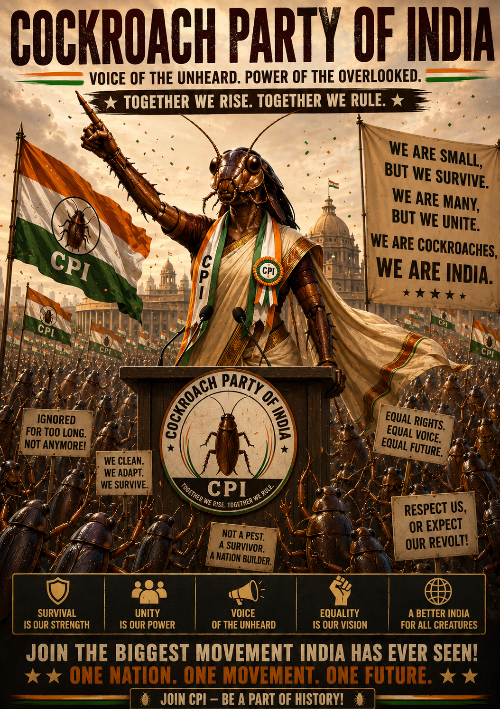

A political movement for everyone the system tried to step on — and who came back anyway. Five demands. Zero godfathers. One enormous, patient swarm.

We are not here to inaugurate ourselves on hoardings, fly business class on the taxpayer's tab, or rename old roads as policy. We are here to ask — patiently, persistently, in writing — for an India that works for everyone who keeps it running.
Build a political home for the ordinary Indian — the auto driver, the gig worker, the unemployed graduate, the small farmer, the tired mother, the chronically online — whose voice keeps getting deleted from the conversation. The rest is satire. The intent is serious.
Read it once. Read it twice. Then forward it to a relative on the family WhatsApp group.
If the CPI comes to power, no retired Chief Justice shall be nominated to the Rajya Sabha, governorship, or any post-retirement sinecure for ten years. Justice is not an interview for the next job.
If a single legitimate vote is found to have been deleted — in any state, by any government — the Election Commission shall be held criminally accountable. Taking away a vote is taking away a citizen.
Women shall receive 50% reservation in the legislature and 50% in the Union Cabinet — without inflating the size of either. Half the country, half the seats. End of negotiation.
No single corporate group shall be permitted to own more than two news channels or two major dailies. Media monopolies shall be unwound so that the news once again belongs to journalists, not shareholders.
Any MLA or MP who defects from the party they were elected on shall be barred from contesting any election — and from holding any public office — for twenty years. The mandate belongs to the voter, not the auction house.
We do not ask about religion, caste, language, or how your grandfather voted. We do, however, have four (4) standards.
Membership is free, lifelong, and revocable only by you.
No fees. No forms in triplicate. No selfies with the founder.
Want to join, volunteer, complain, or send a meme that should be a policy paper? Use the form. We read everything. We reply to most things.
Quick answers for citizens, members, and the merely curious.
The Cockroach Party of India (CPI) is a citizen-led political movement and trending political news platform built on five demands: judicial accountability, the protection of every vote, fifty-percent women's representation, the unwinding of media monopolies, and a real penalty for political defection. It is sometimes also referred to as the Cockroach Janta Party and is open to any Indian who has been written off, scrolled past, or stepped on — and has come back anyway.
They are sister names for the same idea — the unsquashable Indian voter. Cockroach Janta Party describes the people; Cockroach Party of India describes the movement they are building together. Both names point to the same manifesto and the same membership.
The full five-point manifesto is published on this site under The Manifesto. It is updated as the country's situation changes and remains free to read, share, and reprint.
Check your eligibility under Membership and fill out the form under Contact. Membership is free for life. There are no fees, no missed-call registrations, and no garlanding the leader.
The party's takes on trending political news in India are published on our social channels — linked in the footer — and summarised in the manifesto updates here. We post when there is something worth saying, not on a schedule.
The CPI is a citizen movement and a work of political satire. References to elections, demands, and policy positions are commentary, not formal political-party communication. See the satire notice in the footer.